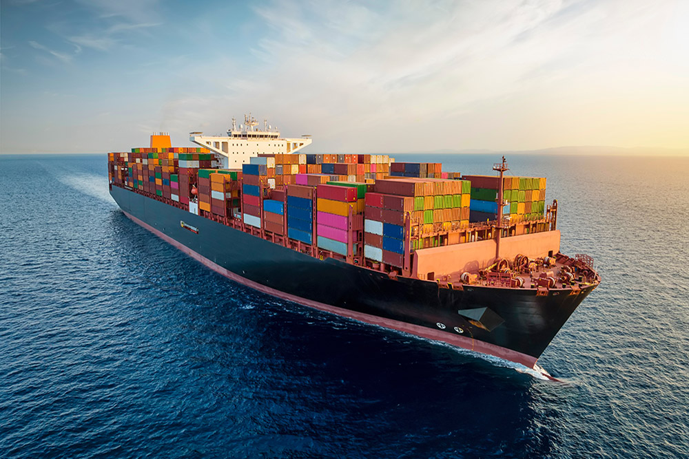

Global Trade • Economics • Opportunity
Following Goods,
Ideas, and
Opportunity
Across the World
Explore how products travel across continents, why nations specialize in certain industries, and how economics shapes the modern world.

05
Countries
04
Industries
10+
Trade Routes
∞
Economic Stories
Countries
How nations participate in global trade.
Bangladesh
Apparel • Textiles
Bangladesh is one of the largest manufacturers of ready-made garments, usually behind only China in terms of total production. The clothing manufacturing industry brings in billions of dollars to the country's economy every year and is responsible for employing thousands of workers, many of whom are women who previously held undesirable and often unsafe jobs as household maids. Along with foreign remittances, the apparel industry is one of the main industries allowing the advancement of Bangladesh and its economy. Indeed, it is because of the apparel industry that Bangladesh's GDP has been able to surpass Pakistan's GDP, and it has allowed the country's GDP per capita to be higher than both of its South Asian neighbors, India and Pakistan.
Vietnam
Manufacturing
Similar to Bangladesh, since the 1970s (after the Vietnam War), the country of Vietnam has been expanding its manufacturing capabilities. It began with garments manufacturing, which is apparently one of the most common industries to begin manufacturing in, as both England and the United States did the same during their Industrial Revolutions. After capturing a sizeable share of the apparel industry, though, Vietnamese manufacturers decided to tap into other industries as well, from shoes and furniture to electronics and automobiles. In fact, the company Nike produces nearly all of its shoes and sports clothing in Vietnam.
China
Technology • Manufacturing
China, despite having Communist roots and still having a Communist government, has positioned itself as one of the world's largest players in the global economy. With a manufacturing capability greater than and unlike any other country, China is now and has been the world's largest producer of manufactured goods ever since it overtook the United States in 2010. Since the early 2020s, however, China has also been trying to position itself as the frontier of high-technology applications, like advanced artificial intelligence, robotics, and fast computing. Given all this, it is not a surprise that China is now the world's second largest economy, right after the United States, and it is catching up fast. That being said, though, China still has significant challenges to overcome as it, too, transitions from a manufacturing economy to a knowledge economy like the United States has. Also, China has a much greater population, so simply having the same GDP as the United States does not mean that it has surpassed it. Quality of life is still in question in China, which suffers nationwide from pollution and an overly-strict work ethic.
India
Services • Pharma
India is a vast, diverse country with a variety of landscapes, climates, and cultures. Its size, location, and natural resources have made it a business hub of the world since antiquity. Today, though, India mostly relies on the services industry and basic manufacturing involving products like pharmaceuticals and toys for children. The services industry is powered by its large population of over one-and-a-half billion people, and its manufacturing industry is supplied by both the country's natural resources and its imports. Besides those two industries, India also benefits from tourism due to the country's natural beauty and historical landmarks. However, India is still a developing country and while it does have one of the largest GDPs of any country out there, that gross domestic product is divided amidst over a billion people. On top of that, India does not have the most ideal relationships with its neighboring countries, which adds to the numerous obstacles already facing India.
Mexico
Nearshoring • Automotive
Many of the products used in the United States (that aren't made in China) are usually made in Mexico. The reason this is is because of Mexico's shared border with the United States. China is usually better overall at manufacturing than Mexico is, but one has to remember that China is all the way on the other side of the Pacific Ocean, the world's largest. Mexico, on the other hand, therefore becomes one of the best places for companies that practice nearshoring in the United States. Nearshoring is a business strategy where instead of moving manufacturing somewhere far away to save costs, it is instead moved to a neighboring or nearby country. An example of nearshoring in the United States is the automotive industry. American car companies like Ford and GM that previously operated factories in the northern and midwestern United States moved their factories to Mexico to save money, leaving what is today called the Rust Belt of the United States.
Industries
What the world produces.
Apparel
Due to its labor-intensive nature and its relatively low overall value, the apparel industry starts out as the industry that powers Industrial Revolutions, regardless of the country. The United States, Great Britain, Europe, and eastern Asian countries all began with clothing manufacturing. Once that was perfected and eventually exhausted, it was moved over to less developed countries, since those countries in a way "need" it more and are more suited for that type of manufacturing. On top of that, developed countries eventually switch from being manufacturing economies to knowledge economies (where the service sector is the largest economically) and because of that, factories become less economically-viable, so the factories naturally move towards the less developed countries.
Electronics
Unlike any other region in the world, eastern Asia dominates in electronics and advanced technology. The reason it is like this is because east Asia has utilized decades of state subsidies and infrastructure development to create entire ecosystems of suppliers, toolmakers, and assemblers located within reasonable distance of each other. The strong emphasis on STEM education also created a workforce that was capable of managing and running these systems. Altogether, that is why countries like China are able to manufacture at such a large scale, while countries like Japan and South Korea are able to develop new, cutting-edge technologies.
Agriculture
Out of the four industries mentioned here, agriculture is by far the least impacted when it comes to globalization--but it isn't entirely unaffected, either. Large countries like the United States can grow practically anything because of its vast landscape, from hardwoods found in frosty climates to colorful tropical fruits found in hot, humid regions. Theoretically, that is the case, but that isn't what always occurs. For example, mangoes, guavas, and other tropical fruits are still grown in countries like Mexico and more exotic foods like coffee and vanilla beans are grown in places like Brazil because it is cheaper and more viable economically. First of all, the United States only has sub-tropical regions that feel tropical (like Florida) and there isn't much of that particular region, so the aforementioned foods are better off grown in their native regions. Also, keeping in mind that the United States has a high labor cost compared to Brazil or Mexico, it makes more sense to grow exotic foods there because the transportation cost is still lower than the cost of the food if it were to be grown and processed in the United States.
Pharmaceuticals
The global pharmaceutical industry is vast, with many countries partaking in its activities. That said, though, there are some countries that dominate certain sectors over others. The United States, Switzerland, and Germany excel in coming up with new ideas for drugs and pharmaceuticals, while China is better at gathering active pharmaceutical ingredients. As for India, it is one of the world's largest pharmaceutical producers and for good reason, too. It costs much less for companies to manufacture pharmaceuticals in India, since it has lower labor costs and a large working population. India also has one of the highest numbers of certified factories that adhere to U.S. regulations. And finally, producing pharmaceutical drugs in India means having access to a skilled talent pool of highly-qualified scientists, pharmacists, and engineers, making the process worthwhile.
Trade Routes
Follow products across continents.
Bangladesh → United States
Apparel Supply Chain
A simple cotton T-shirt sold in an American clothing store often begins
its journey thousands of miles away in Bangladesh. Cotton may be imported
from countries such as India or the United States before being spun into
thread and woven into fabric. The fabric is then cut, sewn, inspected,
packaged, and loaded into shipping containers bound for ports around the
world. Once the shipment reaches the United States, wholesalers and
retailers distribute the clothing to stores before it finally reaches the
consumer.
Bangladesh's comparative advantage lies in its experienced garment
workforce and highly developed textile industry. Although each individual
shirt earns only a small profit, millions of garments exported every year
generate billions of dollars for the country's economy and provide
employment for millions of workers.
China → United States
Consumer Electronics
Modern electronics rarely come from a single country. A smartphone sold
in the United States may be designed in California, powered by processors
manufactured in Taiwan, equipped with memory chips from South Korea, and
assembled in China before being shipped across the Pacific Ocean.
China became the world's manufacturing center because it developed an
enormous network of factories, suppliers, transportation infrastructure,
and skilled workers. This manufacturing ecosystem allows companies to
produce electronics at an enormous scale while keeping costs relatively
low. Rather than producing every component domestically, firms specialize
in the stages where they are most efficient, illustrating how global
supply chains rely on cooperation between many different economies.
Brazil → Europe
Coffee Trade
Brazil has been the world's largest producer of coffee for well over a
century thanks to its favorable climate, fertile soils, and vast
agricultural regions. After coffee cherries are harvested, the beans are
processed, dried, sorted, and shipped to international markets where they
are roasted, packaged, and sold under hundreds of different brands.
Coffee demonstrates that the greatest value is not always created where
the raw product is grown. While farmers cultivate the beans, additional
value is added through transportation, roasting, branding, marketing, and
retail distribution. The global coffee industry therefore illustrates how
supply chains extend far beyond simple production.
Economics
Core ideas behind global trade.
Comparative Advantage
Certain countries, whether due to geography, natural resources, or other factors, have always been able to produce certain goods and/or services better than the other countries in question. This is the basis for international trade and the reason why imports and exports for nations exist in the first place. To give an example, Middle Eastern countries like Saudi Arabia and the UAE have crude oil in supplies that virtually no other region in the world has. Even if it does, like Venezuela, no other country or region in the world has a suitable climate for oil extraction like the Middle East does, where oil is light and can be easily pumped out of dry, empty deserts. Another example of comparative advantage is China. China has one of the world's largest populations as well as one of the most educated ones. Due to its large size, China also has access to vast natural resources like arable land and rare earth minerals, which help the country expand its ever-growing factory systems and manufacturing capabilities. These are two prominent examples, but countries and specific regions around the world each have their own unique capabilities which allow them to capture a specific segment of the gargantuan world economy.
Globalization
Globalization, simply put, is the process where individual, local and regional markets from around the world become a part of a larger, international market where everyone plays a role. Globalization is not simply just supply chains and offshore manufacturing. Those are parts of it, yes, but globalization is much more complex than that. It is the reason why companies like McDonald's and Citi Bank have branches worldwide--to add a sense of format and uniformity throughout the world and to enable those companies to unlock customer bases in countries where that was formerly not possible. Globalization over the years has become possible because of many reasons: the Internet and its related technologies, advances in transportation, relative political stability, and many other reasons. Critics of globalization often say that it takes away much-needed jobs in certain regions (think of the Rust Belt in the American Midwest), but that being said, globalization does make everything cheaper in the long run because of currency differences and of course, the idea of comparative advantage. After all, bananas that we buy in the United States for 25 cents each would not grow in the US in the first place and would likely cost a lot more if it were picked by American hands.
Tariffs
A tariff is basically a tax put by the government on an imported good. Tariffs are paid directly to customs authorities and are paid by the business that is importing the good, not the one that is exporting it from some other country. The only reason the exporters from the other country are affected is because the importer usually has to raise prices in order to make a profit on top of the tariff. Speaking of raising prices, this is usually the reason why consumers and importing businesses dislike tariffs being placed on goods--it makes goods and services more expensive and can lead to financial tensions. That being said, tariffs are not without benefits. They are a way for governments to earn money and to increase domestic production (since domestic companies no longer have to compete with foreign producers). They can also be a way to put pressure on another country during, say, a trade war, the outcomes of which may actually help a nation in the long run. But altogether, tariffs are almost always disliked in the short term, which is why when the current Trump Administration decided to implement tariffs on dozens of countries worldwide, the average American consumer had to endure rising prices and sometimes, fewer options.
Supply Chains
Supply chains are the backbone of the modern, globalized economy. A supply chain refers to the entire network of all the individuals and organizations (along with all their resources, activities, and efforts) required in taking something from raw materials to finished product. Many people confuse supply chains with logistics, but logistics is only a part of a supply chain, referring to the movement and storage of goods from one place to another. But although it is only a part of a supply chain, logistics is definitely one of the more visually-appealing elements of supply chains, since it is much more dreamy to think about container ships transporting hundreds of tons of finished goods across miles of empty ocean than it is to think about someone standing on an assembly line welding together, say, the components of an iPhone circuit board. Because of the rise of globalization, supply chains today are much more international than supply chains of the past. In the past, raw materials and labor was often sources locally or regionally. But today, it is possible to say that labor- and material-intensive processes like manufacturing are dominated by only a few of the world's 190+ countries.
About Atlas
Write your personal story here.
Connect economics, trade, and your lived experience.
Explain why you built this project.